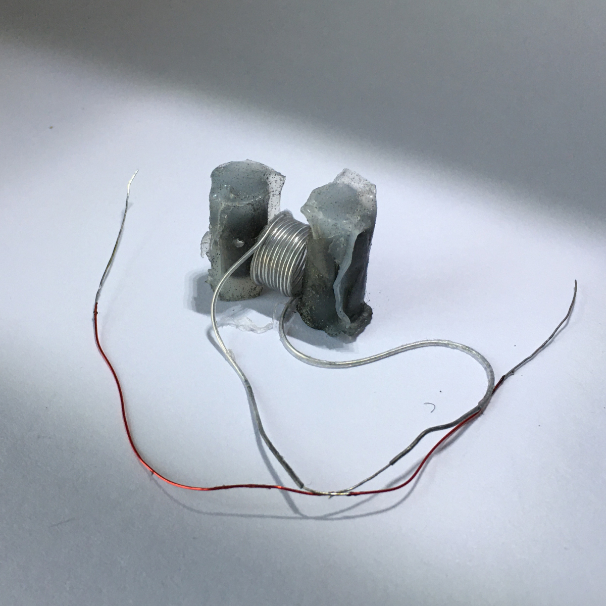
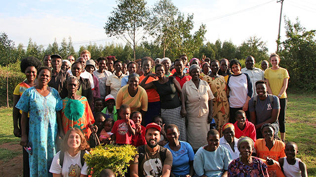
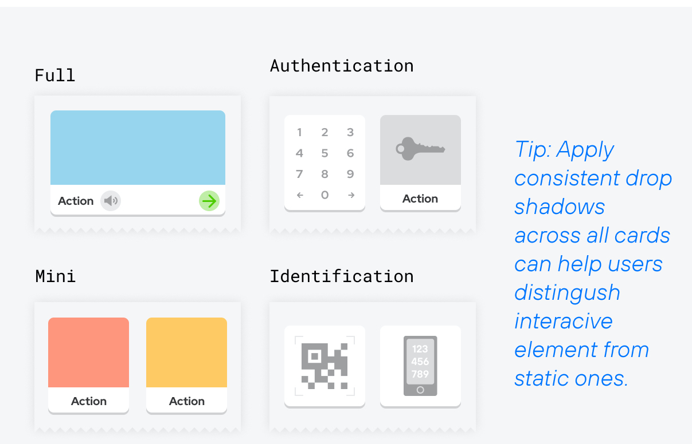
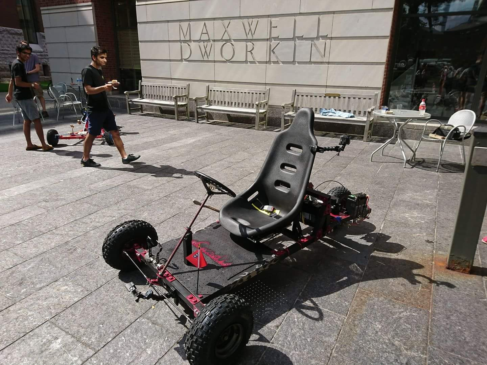
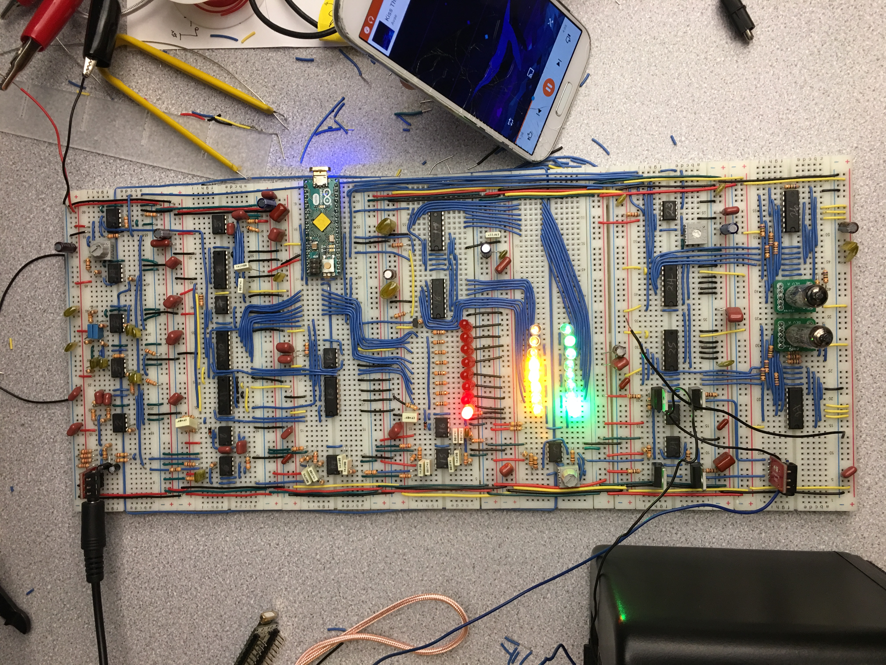
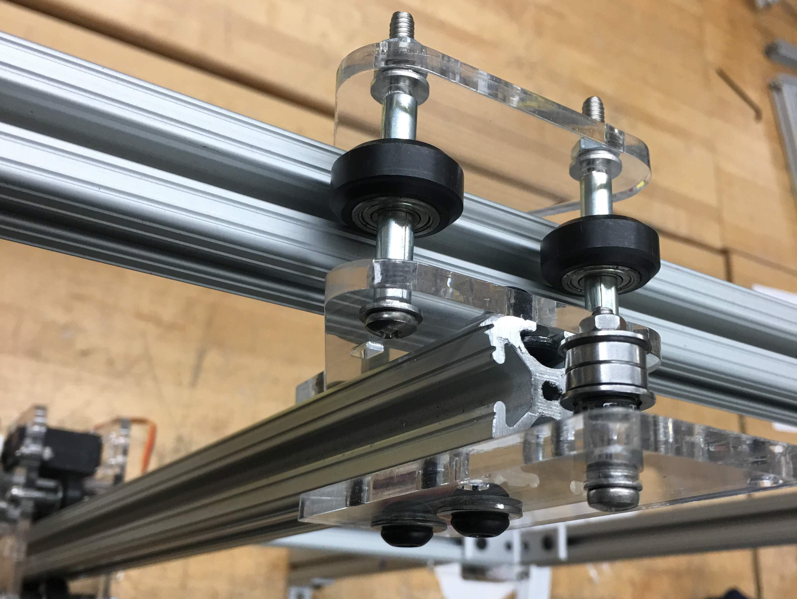
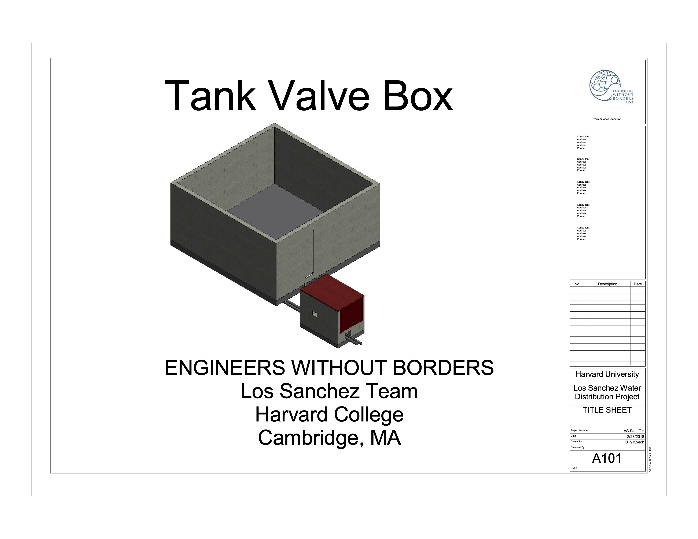
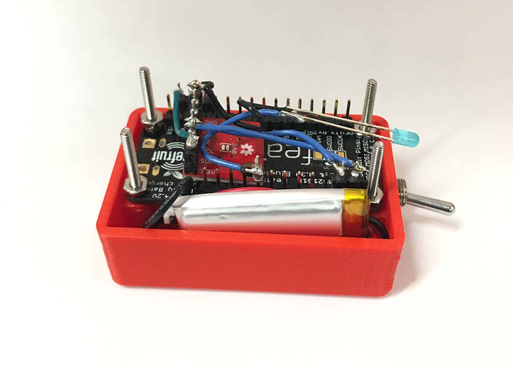

DESIGN AND FABRICATION OF SOFT COMPOSITE MATERIALS FOR SOFT ELECTRO-MAGNETIC ACTUATORS
ELECTRICAL ENGINEERING ⚉ MATERIAL SCIENCE
Senior capstone project.

ELECTRICAL ENGINEERING ⚉ MATERIAL SCIENCE
Senior capstone project.

ELECTRICAL ENGINEERING ⚉ DEVICE DESIGN
A hand wired ergonomic keyboard for writing my thesis with based on the ErgoDox EZ Design

PROJECT MANAGEMENT ⚉ HUMANITARIAN AID
Engineers Without Borders Water Provision Project in Kibuon, Kenya.

UX/UI DESIGN RESEARCH ⚉ WEB DEVELOPMENT ⚉ DATA SCIENCE
Empowering the next billion smart phone users to engage in finance

HARDWARE ⚉ SOFTWARE
Collobarative project between Harvard and Hong Kong Unversity of Science and Technology.

HARDWARE ⚉ SOFTWARE
An electronic board that takes audio input and renders visualisations on an array of LEDs.

HARDWARE ⚉ SOFTWARE
A device that draws on a vertical dry erase board by moving a sharpie that traverses two axes.

ELECTRONICS ⚉ SOFTWARE
Electronic implementation of the game checkers

STRUCTURAL
A structure for securing water pipes and providing access to water valves for a community in the Dominican Republic.

A sensing device that uses an accelerometer to collect data from clothe hangers in retail stores